Our own arena official: a four-duct hover drone with a ten-segment light bar on its nose. It counts the start with its lights, counts a knockout over the machine, tows stuck and locked machines apart on the tick the rules part them, sprays out fires, goes red for POWER DOWN and cards a house bot that hits a beaten machine after the bell. It has no body in the physics, so it cannot change a fight, and the tests prove it.
Every picture below is a real Godot capture through the fight camera, on this branch, with the HUD and the new commentary lines as they are. Where a setup was forced to get the moment on camera, it is marked.
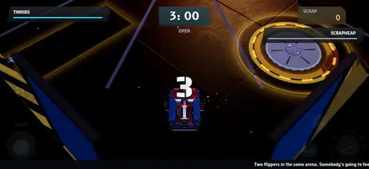
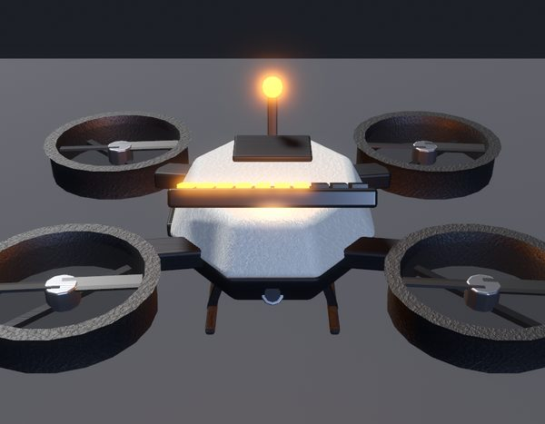
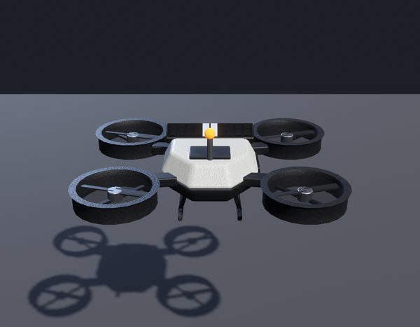
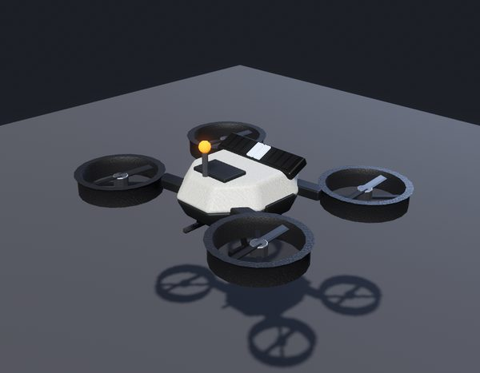
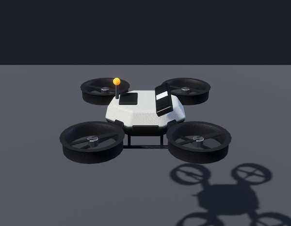
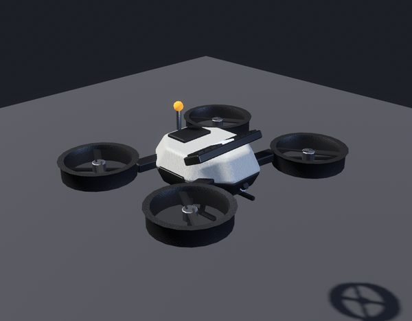
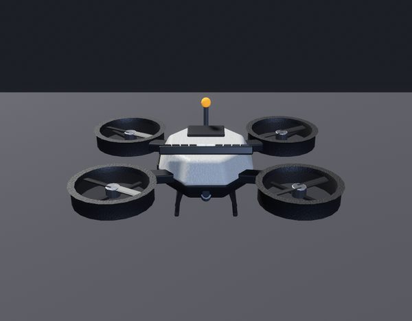
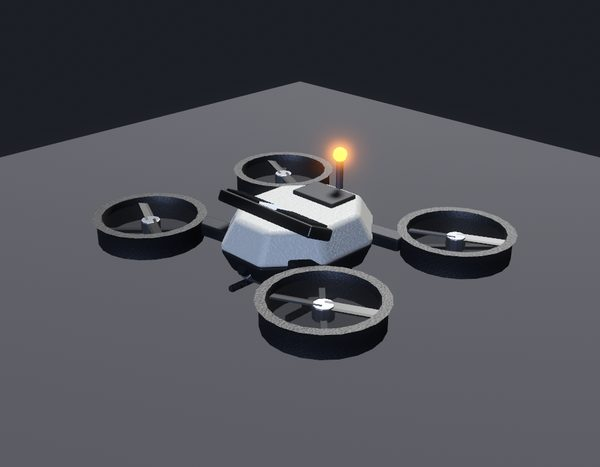
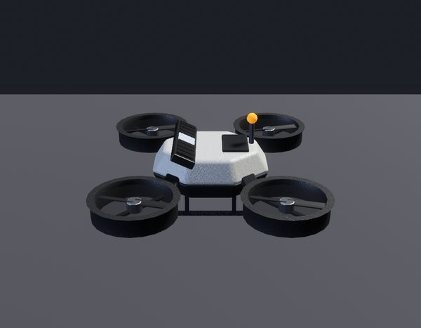
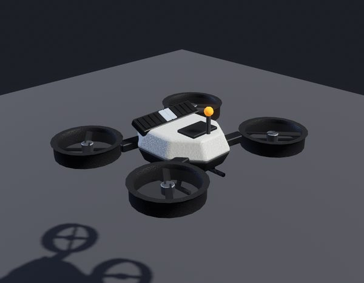
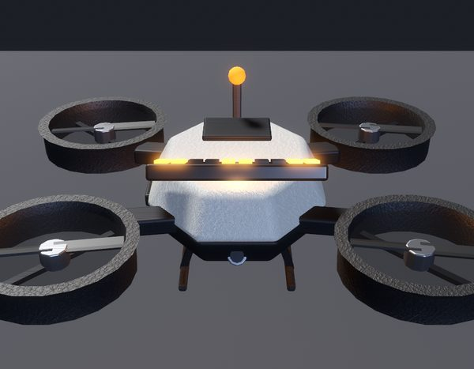
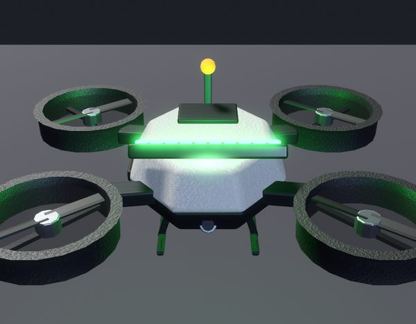
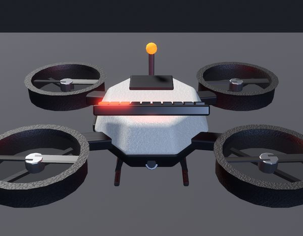
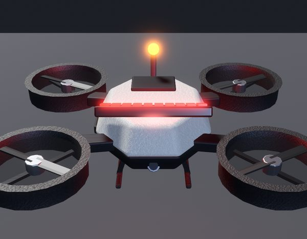
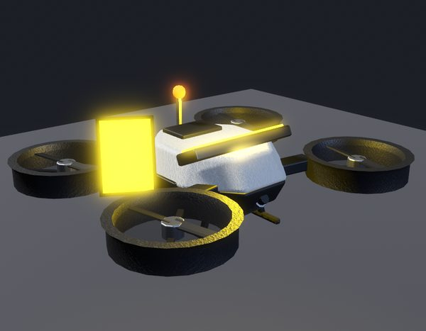
It places itself in the fight camera's frame beside what it is dealing with, clear of the timer, the names, the knockout band and the thumbs. When nothing is happening it waits just out of the top of the shot.
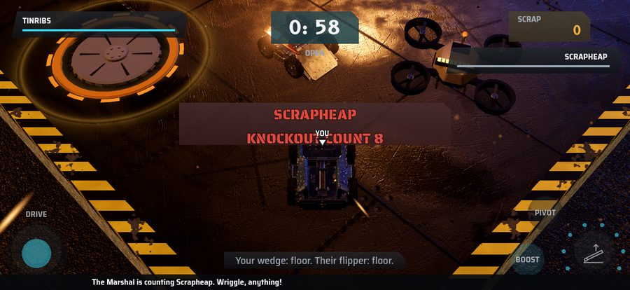
When the rules start the 10 second count it flies over the machine and counts it down with its segments, in step with the HUD's number (tested every frame). The idle opponent was set down near the player so the count was in the player's shot.
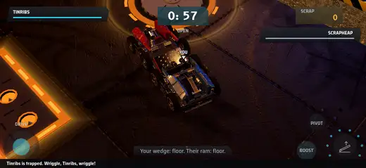
It arms from the rules' own lock-up timer and arrives before the break. On the tick the existing impulse parts them it draws tow lines to both machines. The impulse is the one the rules always applied: the fight hashes the same with the Marshal on and off.
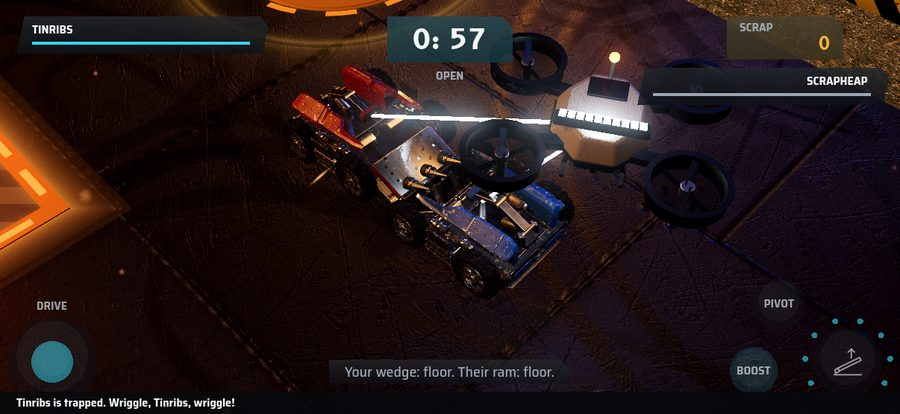
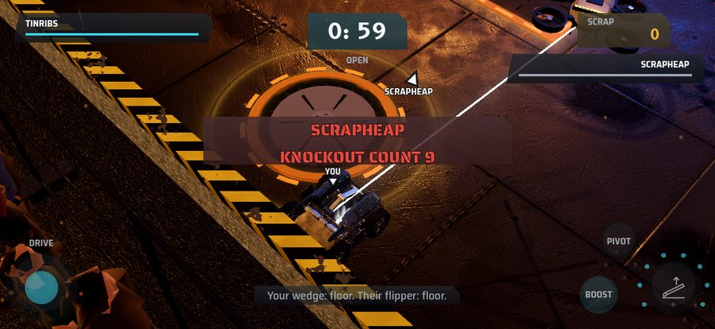
A machine wedged on the scenery gets the existing unstick nudge; the Marshal hooks one line to it on that tick. A wedged machine is also being counted, so here it counts and tows at once.
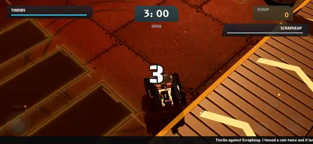
A machine taking burn or heat damage, or sitting in a live arena flame, gets the nozzle: a white extinguisher cloud until 1.4 s after the last burn. Visual only; no rule changes.
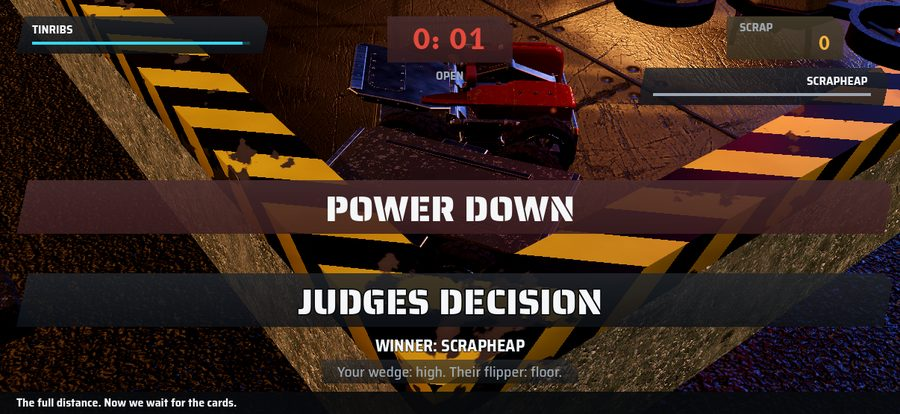
At the bell the bar goes red and POWER DOWN goes on the HUD band and the venue screens (after a payoff's own sting when there is one). On a judges' decision the crowd reacts 0.9 s later: cheers a clear one, boos a close one (2 points of 10 or fewer, the same margin the commentary uses).
In the finish beat's 2.6 m orbit of the wreck the Marshal stays out of shot rather than fill the frame; the word carries it.
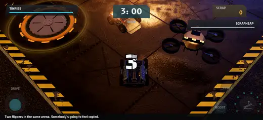
Anything moving faster than 1.6 m/s through 0.6 m of it (a thrown machine, a torn-off part, the house bot) knocks it: a lurch, a wobble, the bar flickers, it recovers level and the commentary gets its line. Forced here for the capture.
Only after a knockout or a kill, only with a house bot on the floor, only ever at the loser. It never happens to your machine when you won. One fight in four (a hash of the fight's seed, so a replay plays the same) adds a late hit and the card. The finish beat grows to 7.1 s, or 8.5 s with the late hit, and the shell waits for it; a tap still skips.
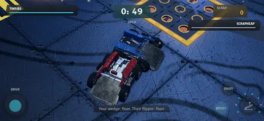
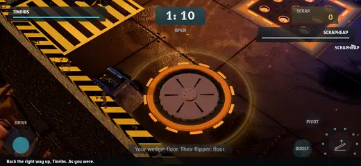
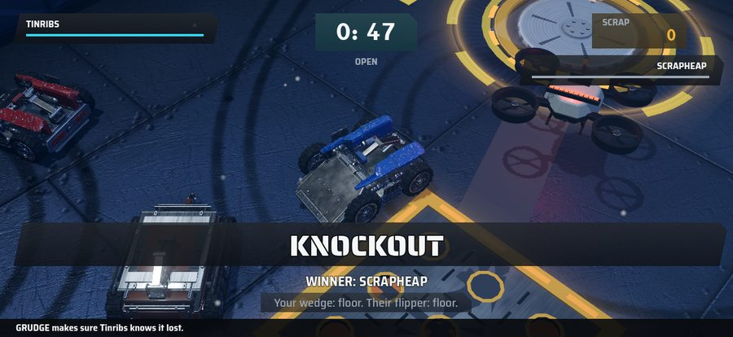
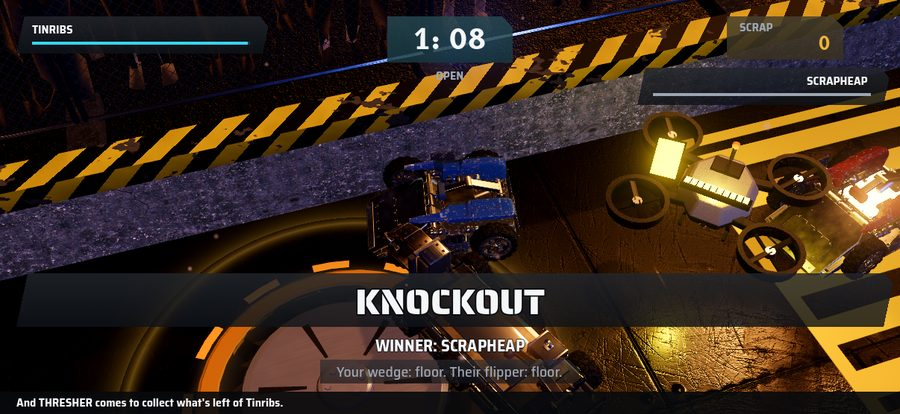
It runs after the result is sealed, in the same world. The result, the replay inputs, the damage and the scrap are built and sent in _finish before the mischief is even planned; the house bot first moves on the 30th tick after that; both machines were stopped for the result and the game refuses damage on a stopped machine; only the house bot, which is in no tally, is woken.
| Check (tests/mischief_test.gd, tests/marshal_test.gd) | Off | Ritual | Late |
|---|---|---|---|
| Fight hash through the result row | 4f82b6da | 4f82b6da | 4f82b6da |
| fight_result, key for key (bar the two wall clock stamps) | reference | identical | identical |
| Replay inputs | 2,635 rows | identical | identical |
| House bot travel after the result | 0.00 m | 4.07 m | 4.20 m |
| Condition change on either machine after the result | none | none | none |
| The late fight replayed from its own inputs | same hash | ||
| Player wins: target, nearest the house bot came to you | the opponent; 2.30 m | ||
| Marshal on vs off, fixture fight, every 30th tick | Yard c814ec9e, Coliseum 68fa59d6, forced lock-up 21d31090: identical | ||
The review found the AI letting go of a wall pin at 3 s to dodge a 4 s penalty that did not exist. Removing the AI's release made pins oppressive, so instead the rule is now real: a machine held on a wall by the other (in reach, pushed into it, taking no damage, not getting away) for 4 s is freed, and the Marshal tows the pinner off. The AI's 3 s release is unchanged and now obeys a rule that exists.
| 48 AI fights, 6 arenas, 4 weapons, 2 seeds | Judges | Ring-outs | Pin s / fight | Longest pin | Pin breaks | Blows / min |
|---|---|---|---|---|---|---|
| Before (release at 3 s, no rule) | 23 % | 8 | 19.9 | 3.0 s | 0 | 9.05 |
| AI release removed | 35 % | 3 | 30.8 | 28.1 s | 0 | 8.15 |
| Real 4 s rule, AI release kept | 25 % | 8 | 22.0 | 3.0 s | 11 | 9.25 |
A first version that also counted a spinner grinding someone on a wall broke 107 times in the same 48 fights; the "taking no damage" clause fixed that. One determinism golden moved (the Trapdoor's 3700-tick fixture run, where the fixture AI holds the idle player for 4 s); with the rule switched off it gives back the old hash exactly, and the other five are unchanged.